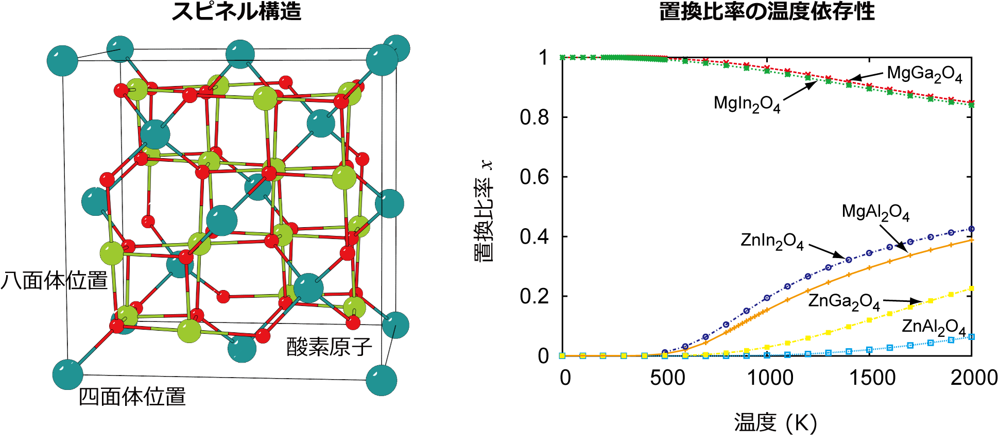

1. CLUPANの概略¶
1.1. クラスター展開法を用いた熱力学計算¶
第一原理計算を用いた多元系における熱力学計算
二種類以上の原子種を含む固体において，有限温度での相平衡を計算する場合，溶質原子の配置効果を取り入れることが重要となります． しかし，第一原理計算のみを用いて，合金の取り得る配置を網羅することは不可能です． そのため，クラスター展開法などを用いて合金のモデリングを行い，原子間の相互作用を第一原理計算から評価することが一般的に行われています． 第一原理計算の精度を損なうことなく原子配置効果を見積もることができれば，高い精度の基底状態の構造，熱力学量や平衡状態図を得ることができます．
クラスター展開法 (Cluster expansion method)
合金構造のエネルギーを，構造に含まれる原子のペアや三角形，四面体といった「クラスター」の数と相互作用の大きさにより合金構造のエネルギーを表現するというのが，クラスター展開法である 1 2 3 ．
クラスター展開法では，各格子点iでの原子種をスピン変数 で区別する．
A-B二元系のとき，A原子を ，B原子を  とした場合に，最隣接した格子点i, jにあるA-A，B-Bペアを , A-Bペアは というように，クラスターをスピン変数の積で表わす．
配置のエネルギー は
とした場合に，最隣接した格子点i, jにあるA-A，B-Bペアを , A-Bペアは というように，クラスターをスピン変数の積で表わす．
配置のエネルギー は
と表される． はクラスターの識別子である． は構造のエネルギーEへのクラスター の寄与の大きさを表す係数であり，有効クラスター相互作用(Effective Cluster Interaction, ECI)と呼ばれる． は，クラスター の相関関数と呼ばれ，与えられた合金構造に関して，クラスター における原子の平均的配置を表現したものであり，
で表される． ここで， は構造に含まれるクラスター の数である． このように相関関数は合金構造毎に固有の値をとる． よって，ECIを見積もることができれば，合金構造のエネルギーを求めることができる． 精度の高い熱力学計算のためには，このECIを精度良く見積もることが必要となります．
Bibliography
1.2. CLUPANによるクラスター展開，熱力学計算¶
CLUPANでは，クラスター展開法によるECIの評価，構造のエネルギー計算，モンテカルロ法による有限温度での熱力学計算・自由エネルギー計算を行う． 第一原理計算を行うコードとして，VASPに直接対応しています． それ以外のコードを用いる場合，原子位置を表すファイルを変換する必要があります．
第一原理計算から，ECIを評価し，熱力学計算を行う場合，以下のような順序で計算を行う．
まず，結晶格子に含まれる対称性的に独立な 個のクラスターを探す（ cluster ）．
次にクラスターの個数の初期値 を決定する．
- 次に，再帰的なアルゴリズムを用いてECIを見積もる．
となるような 種類のDFT構造を決定し（ mkposcar ），DFT計算によりエネルギーを計算する．
また， 個のクラスターに対して，DFT構造の相関関数を計算する( correlation )．
DFT構造のエネルギー・相関関数を用いて，交差検定スコア(Cross validation score, CV score)が最小となるようなクラスターの組み合わせを探索する( gasa )．
CV scoreが最小となるクラスターの組み合わせに対する 個のECIを最小二乗法により決定する( lsf )．
得られたECIが最適であるかどうかを検定するため，検定に最適なDFT構造を探索し( search_poscar )，DFT計算および相関関数の計算( correlation )を行う．
ECIの検定は，CV scoreが最小となったクラスターの組み合わせを用いて，既存のDFT構造のエネルギーと選ばれたDFT構造のエネルギーからCV scoreを再評価する( lsf )ことにより行う．
CV scoreが大きく変化すれば，選ばれたDFT構造を構造集団に追加し，CV scoreを最小にするクラスターの組み合わせを再探索する．
3-7をCV scoreが収束するまで繰り返す．
CV scoreが要求される精度になるまで，クラスターの個数 を増やす．
最適化されたECIを用いて，エネルギー計算・モンテカルロ法による熱力学計算・自由エネルギー計算を行う．
{kind=link}
詳細な計算方法は， 4 を参照してください．
Bibliography
- 4
A Seko, Y Koyama and I Tanaka, Phys. Rev. B 80, 165122 (2009).
1.3. CLUPANの構成¶
CLUPANは以下のプログラムから構成されている．
main programs
- 結晶の対称性から，独立な原子配置を持つ構造を探索する．
mkposcar
- 結晶の対称性から，独立なクラスターを探索する．
cluster
- 構造の相関関数を計算する．
correlation
- 最小二乗法により，有効相互作用エネルギーを計算する．
lsf, wlsf
- 遺伝的アルゴリズム，およびシミュレーティッドアニーリングにより，交差検定スコアが最小となるクラスターの組み合わせを探索する．
gasa, wgasa
- 有効相互作用エネルギーがより精度良く見積もられるよう，エネルギー計算を行う構造を探索する．
search_poscar
- 有効相互作用エネルギーを用いて，基底状態の構造を探索する．
gss
- モンテカルロ法により，有限温度下でのシミュレーションを行う．
cmc, gcmc
- モンテカルロ法の結果から，熱力学積分を用いて，配置の自由エネルギーを評価する．
ti
sub programs
- 相関関数の分散や異なるクラスターの相関関数間の相関を調べる．
statistic
- プログラム search_poscar_variance で用いる予測エネルギーの分散を計算する．
variance_energy
- プログラム search_poscar_variance で必要となるVARIANCE, MEANを計算する．
variance_stpop
- 低温展開によりグランドポテンシャルを評価する．
lte
1.4. CLUPANを用いた計算例¶
スピネル酸化物における温度による不規則化の計算 5
スピネル酸化物は，AB 2 O 4 という組成式で表現され，A，B原子がO原子副格子（fcc）の四面体位置と八面体位置を占有する構造を持つ． 温度上昇により，A原子とB原子の置換に起因した陽イオンサイトにおける不規則化が起こる． 不規則化は，四面体位置にB原子がいる割合，置換比率xにより表される． このスピネル酸化物において，第一原理計算とクラスター展開法，モンテカルロ法を組み合わせて置換比率の温度依存性を計算した例を示す．
{kind=link}
酸化スズ系における安定構造の探索 6
SnO 2 はTiO 2 と同様に常温・常圧下でルチル型構造を持ち，また酸素欠乏型の不定比を取りやすいことが知られている． 酸化チタン系が一連のシア構造を持つことが古くから実験的に良く知られているのに対し，酸化スズ系については，構造や安定性についてほとんど実験的情報はなかった． この酸化スズ系において，第一原理計算とクラスター展開法を組み合わせて構造と相安定性を計算した例を示す．
{kind=link}
Bibliography